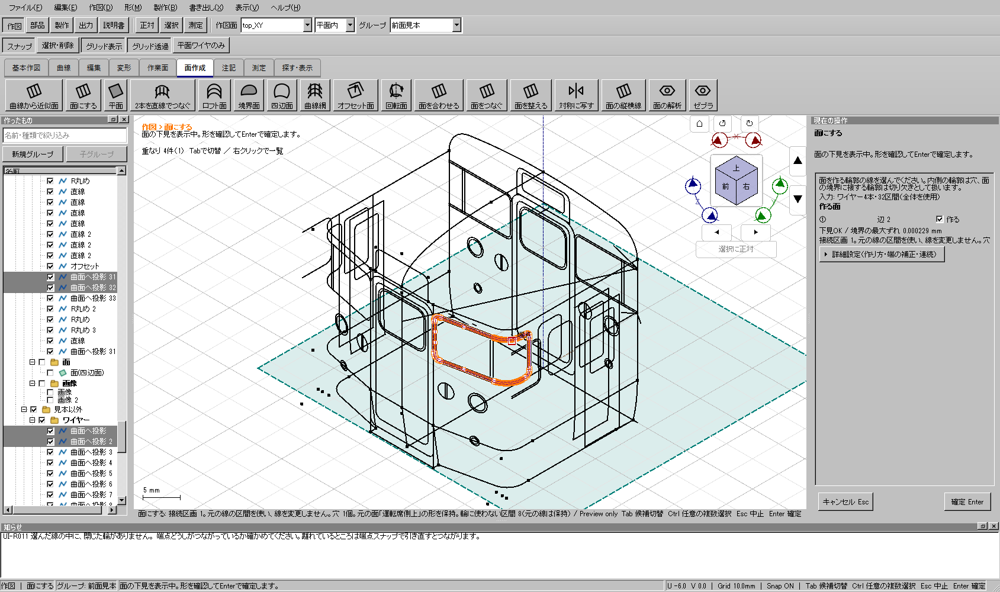
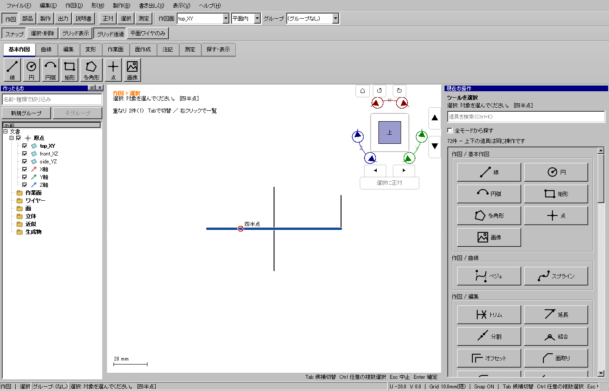
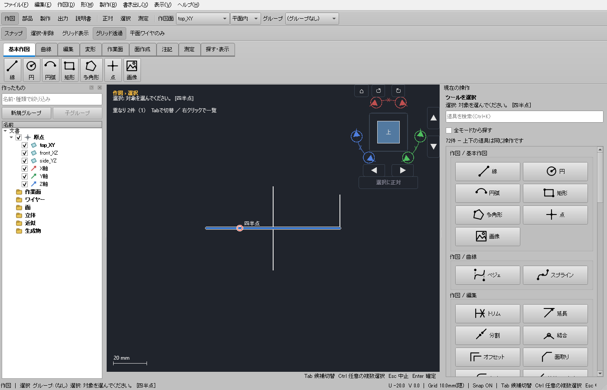

2026-11-04。固定の操作案内を一般的な輪郭の説明へ変更し、カーソル下の候補と選択済みの線を区別しやすくしました。
Windows配布版 ／ このPCの検証済みCAD。製品ソース2fe8e3b8e。全体195試験、開発版・配布版のUI各658試験に成功し、配布版でも実Windowsの表示と添付モデルを確認しました。
「窓」など特定の作例に依存する表現をなくし、案内を次に変更しました。
面を作る輪郭の線を選んでください。内側の輪郭は穴、面の境界に接する輪郭は切り欠きとして扱います。
関連する状態表示も同じ輪郭の説明へ揃えました。選択区間を勝手に全体へ広げる変更はしていません。「選んだワイヤー全体を使う」は、必要なときに押す明示操作のままです。

| 状態 | 表示 |
|---|---|
| カーソル下の未選択線 | 青。通常の線より太く、白と濃色で縁取りします。 |
| 選択済みの線 | オレンジ。候補より太く、同じ縁取りで背景から分けます。カーソルを重ねても選択色を保ちます。 |
| 役割を指定した入力線 | 中心の役割色を保ち、周囲の青・オレンジで候補と選択を示します。 |
旧表示は候補色が作業面の水色に近く、後で描く交差線に隠れる経路と、薄い表示が候補にも残る経路がありました。通常線、選択線、候補線の順に描き、候補を薄くする対象から除きました。非表示や選択範囲の判定は保持し、元の線・UUID・参照・保存処理・幾何計算は変更していません。


| 検査 | 結果 |
|---|---|
| 事前整合検査・全体 | 事前9件、CTest195件、skip 0。旧CAD自己試験と通常起動も成功。 |
| 開発版・配布ZIP内 | それぞれ658件すべて成功。部分選択、削除、役割色、取消・道具切替などの既存検査を維持。 |
| 実Windowsの配布版 | 重点6件と、100・125・150・200%表示の候補線検査が成功。両テーマ、明暗の画像、交差線、役割色、選択済みの区間を確認。 |
| 添付115投影のコピー | 3DビューのCtrlクリック→明示的な全体切替→1穴の面→0.1 mm厚み→Undo/Redo→保存再読込が成功。上下と側面に帯を残し、内側に材料がないことを検査。 |
入力コピーは1,035,067 bytes、SHA256はf472858638de8413d47da0395e41b7655ca08c55bf3cfc2f256acf86946b1dca。全体証拠はresult.json、配布版のモデル操作はpackaged-final.jsonです。公開ZIPのSHA256は7142a6970a4921dd5dc4ef83adc76e8b2b99e3629dda1eb60e12fb096625d516。GitHub側のタグとZIPのdigestも照合しました。
独立した読み込みキャッシュで添付モデルを確認すると、保存後の原本比較だけが失敗しました。再読込・再計算・帯の形状は成功しており、差は既存曲線の方向ベクトル3数値、最大2.22×10⁻¹⁶でした。旧公開版でも同じ条件で失敗したため、今回の描画変更とは切り分けました。
保存前の原本比較は完全一致を維持します。再読込後だけ、数値に4倍の機械イプシロン×max(1,絶対値)以内の丸めを許します。文字列・UUID・参照の一致、項目の有無、配列の順序と個数は厳密に照合し、実際の数値変更、UUID変更、配列の順序や個数の変更を拒否する負例も追加しました。製品の保存・読込・幾何コードは変えていません。失敗時の元/再読込JSONと旧公開版の失敗記録はout/hover-guidance-20261104に保持しています。
最初の事前検査は検査開始後の点描画分離で入力が変わったため無効となり、次の全体入口では試験コードの明示ヘッダー不足を検出しました。いずれも成功扱いせず、修正を固定して全体を新規実行しました。試験の除外、時限や幾何許容差の拡大はしていません。
担当は主担当1名。根拠は実CAD内のQtウィジェット・マウスイベント、画素検査、保存再読込です。更新した選択操作の説明と輪郭から面と部品を作る手順も参照できます。